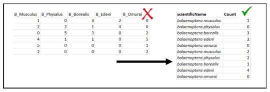
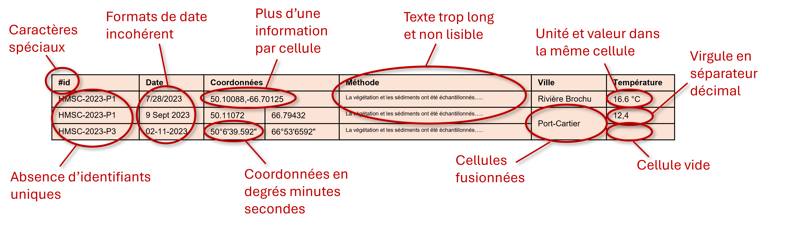

Detailed Guide
The following page provides a summary of best practices and conventions to follow when it comes to data management.
This guide is being developed and will continue to be refined and expanded over time.
1. Basics
- It is recommended to save and send tabular data files in .xlsx or .csv format.
Try to name your files in a concise and descriptive manner. File names should be short, free of special characters, and contain no spaces.
To separate words in a file or folder name, use underscores ( _ ) or hyphens ( - ). Avoid using periods in file names, as they can cause compatibility issues in some systems. Limit the use of accented characters.
Examples of good and bad practices:
✔️ 2024_BLABLA_Rimouski.xlsx
❌ Figure 1.temperature.csv
❌ Characterization project, heat bay - temperature data for the year 1990-1995.xlsx
Three essential rules for promoting a good structure for tabular data files:
- Each variable should have its own column.
- Each observation should have its own row.
- Each value should have its own cell.


Figure 1. Données verticales et données horizontales.
2. General Standards
2.1 Dates and Times
In data management, date and time entries must comply with the ISO 8601 standard. It can be broken down as follows:
yyyy-mm-ddThh:mm:ss-00:00 is equivalent to year, month, day, T, hour, minute, second, UTC
2021-09-09T07:38:00-04:00 is equivalent to Eastern Daylight Saving Time, therefore UTC-4*
2021-09-09T07:38:00-05:00 is equivalent to Eastern Standard Time, therefore UTC-5*
*These UTCs correspond to daylight saving time and Quebec standard time.
You don't have to enter the full ISO 8601 expression to record dates and times.
Here are some examples of accepted entries:
- yyyy-mm-dd
- yyyy-mm
- yyyy
For archiving purposes, it is therefore not mandatory to enter full dates and times. The year alone is sufficient to make date entry acceptable.
However, the date entry format must remain consistent.
2.2 Geographic Coordinates
Geographic coordinates are recorded using two distinct variables: latitude and longitude.
They should always be recorded using decimal degrees (do not use coordinates in degrees-minutes, for example).
Whenever possible, in the case of biodiversity data, each observation should have its own geographic coordinates. In other words, the identification of a specimen should also be accompanied by the recording of its GPS position.
3. File Structure Examples
3.1 Biodiversity Data
Fish Inventories
| eventDate | decimalLatitude | decimalLongitude | stationID | samplingProtocol | event | vernacularName | scientificName | occurrenceStatus | basisOfRecord | longueur_cm | individualCount |
|---|---|---|---|---|---|---|---|---|---|---|---|
| 2024-10-16 | 48.1331 | -69.1706 | P01 | senne | trait 1 | Bar rayé | Morone saxatilis | present | livingSpecimen | 4.5 | 10 |
| 2024-07-16 | 48.1331 | -69.1706 | P01 | senne | trait 1 | Bar rayé | Morone saxatilis | present | livingSpecimen | NA | 95 |
| 2024-07-16 | 48.1331 | -69.1706 | P01 | senne | trait 2 | Éperlan arc-en-ciel | Osmerus mordax | present | livingSpecimen | 10 | 2 |
| 2024-07-16 | 48.1331 | -69.1706 | P01 | senne | trait 2 | Éperlan arc-en-ciel | Osmerus mordax | present | livingSpecimen | NA | 45 |
- For more information on the basisOfRecord and the occurrenceStatus refer to Appendix 1
Characterization by transect and/or quadrats
| eventDate | decimalLatitude | decimalLongitude | transect | quadrat | kingdom | taxonRank | scientificName | indivudualCount | occurrenceStatus | basisOfRecord |
|---|---|---|---|---|---|---|---|---|---|---|
| 2022-07-16 | 49.300694 | -123.11667 | 1 | 1 | Chromista | species | Fucus distichus | 12 | present | humanObservation |
| 2022-07-16 | 49.300694 | -123.11667 | 1 | 2 | Plantae | genus | Mastocarpus | 0 | absent | humanObservation |
| 2022-07-16 | 49.300694 | -123.11667 | 2 | 1 | Plantae | species | Ulva californica | 5 | present | humanObservation |
Water quality (independent measurements not taken simultaneously with species identification)
| eventDate | decimalLatitude | decimalLongitude | stationID | location | samplingProtocol | temperature_degree_C | salinite_psu | pH | conductivite_millisiemens_per_cm |
|---|---|---|---|---|---|---|---|---|---|
| 2024-10-16T15:30-04:00 | 48.1331 | -69.1706 | P01 | Rivière Brochu | sonde | 6.76 | 3.13 | 7.8 | 3.76 |
| 2024-07-16T16:30-04:00 | 48.1331 | -69.1706 | P01 | Rivière Brochu | sonde | 7.35 | 2.74 | 7.9 | 3.38 |
| 2024-07-16T17:30-04:00 | 48.1331 | -69.1706 | P01 | Rivière Brochu | sonde | 7.73 | 1.54 | 7.6 | 1.98 |
| 2024-07-16T18:30-04:00 | 48.1331 | -69.1706 | P01 | Rivière Brochu | sonde | 7.93 | 1.16 | 7.8 | 1.52 |
üü† Mandatory (will be added by the data steward if needed)
üîµ Suggested
⚪ Example of which some variables can be named
These examples are template suggestions based on fictitious data. Except for mandatory variables, all other variables may be added, removed, or modified. The important thing is to remain consistent when filling in each variable and to maintain best practices to ensure data consistency.
3.2 Physicochemical Data
For physicochemical data, the data can be grouped into a single table, respecting the basic concepts described in sections 1 and 2 above. Each in situ sampling or measurement event is defined by a unique identifier. For each of these events, its identification and location (station, latitude, longitude, time, etc.) will be indicated, as well as all the data resulting from the analysis of this sample and/or the in situ measurements.
For example, imagine a sampling campaign at sea at two times of the day, along a transect with three sampling stations where in situ measurements are taken with a probe placed directly in the water during water sampling for laboratory analysis. The database could be structured as follows:
| id | stationID | latitude | longitude | time | temperature | practical_salinity | nitrates | DIC | dissolved_oxygen |
|---|---|---|---|---|---|---|---|---|---|
| RIM_2023_001 | P01 | 50.10088 | -66.70125 | 2023-06-13T06:03:04Z | 4.32 | 23.5 | 2.34 | 183.5 | 86.64 |
| RIM_2023_002 | P02 | 50.25301 | -67.36485 | 2023-06-13T06:24:01Z | 4.51 | 23.4 | 5.87 | 125.2 | 83.71 |
| RIM_2023_003 | P03 | 50.49986 | -67.75423 | 2023-06-13T07:01:57Z | 3.94 | 19.1 | 6.25 | 174.2 | 91.31 |
| RIM_2023_004 | P01 | 50.10088 | -66.70125 | 2023-06-13T18:18:00Z | 6.24 | 23.7 | 2.89 | 184.8 | 86.61 |
| RIM_2023_005 | P02 | 50.25301 | -67.36485 | 2023-06-13T18:34:10Z | 7.78 | 25.9 | 9.45 | 147.2 | 84.02 |
| RIM_2023_006 | P03 | 50.49986 | -67.75423 | 2023-06-13T18:53:49Z | 4.20 | 19.3 | 11.62 | 201.4 | 94.84 |
It should be noted here that, although the stations were repeated during the campaign, the identifier at the start of each line is unique and makes it possible to bring together all the measurements and analyses carried out at a station at a given time.
⚠️ Important: As it stands, a single database like this is practically unusable. To ensure that it is easy to understand and therefore can be reused, it is essential that this table be accompanied by a dictionary of variables explaining what each variable represents and how each one was measured (see section Dictionary of variables of this guide).
4. Mistakes to Avoid
This section aims to present the most common mistakes to avoid when building databases. The table below contains errors in both cell structure and content that complicate or make analysis impossible.
4.1 Common Mistakes
General database counterexample containing errors

These errors include:
- Special characters: Avoid including special characters in variable names
- Identifiers: Add a unique identifier per event
- Date: Use ISO 8601 format to enter the date and maintain consistency with the format used throughout the database
-
Unique information per cell:
- Longitude and latitude coordinates must be entered in separate cells
- The unit of measurement must be provided in a separate cell and never directly with the value
-
Coordinates: Coordinates must be provided in decimal degrees, not degrees-minutes-seconds
- Readability: Summarize the text content to make it as concise as possible
- Table structure: Never merge cells
- Decimal separator: Use periods, not commas
- Missing values: Write NA to indicate a cell with no data and do not leave any cells blank.
The table below presents the same information, but in a comprehensive and interoperable format.
Corrected database containing the information from Table N
| eventID | eventDate | decimalLatitude | decimalLongitude | stationID | samplingProtocol | location | measurementType | measurementValue | measurementUnit |
|---|---|---|---|---|---|---|---|---|---|
| HMSC-2023-P1 | 2023-07-28 | 50.10088 | -66.70125 | P1 | Seine | Rivière Brochu | temperature_surface | 16.6 | degree_C |
| HMSC-2023-P2 | 2023-09-09 | 50.11072 | -66.79432 | P2 | Fyke Net | Port-Cartier | temperature_surface | 12.4 | degree_C |
| HMSC-2023-P3 | 2023-11-02 | 50.11099 | -66.89432 | P3 | Carotte de sédiments | Port-Cartier | temperature_surface | NA | NA |
4.2 To summarize
To avoid: - Variable names should not be values - Variables should not be contained in both rows and columns - Each type of observation unit should be stored in its own table - Cells should not be merged - Avoid including special characters in variables (e.g., #) - Avoid leaving the variable title blank
Best practices: - Use ISO 8601 format for dates - Add a unique identifier per event - Separate latitude and longitude - Indicate coordinates in decimal degrees - Summarize the content of the text (methodology) to make it as concise as possible - Use a period as a decimal separator in tabular files - Insert 'NA' for Empty cells - Specify the units of measurement - Add stationID (if possible and relevant) - Add sampleID (if possible and relevant) - Create a data dictionary (if possible and relevant)